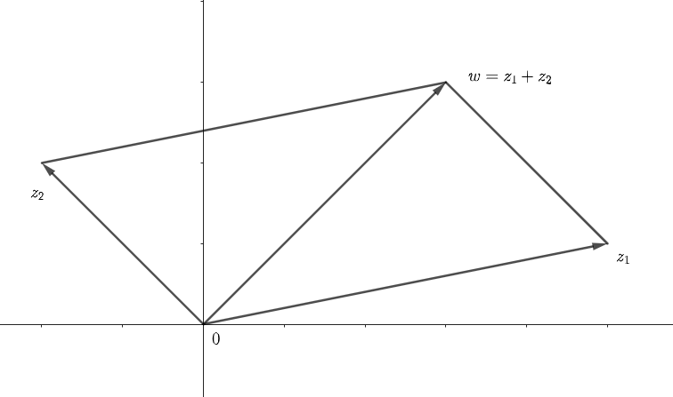
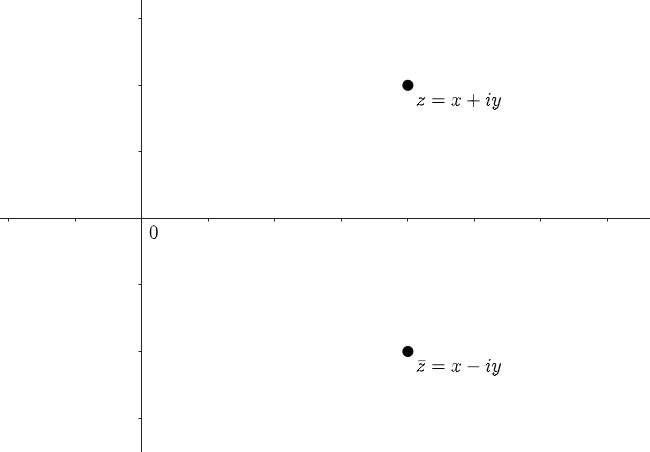

\(z = x + iy \ (x,y \)は実数\(,i = \sqrt{-1}\ )\)の形の数を複素数(complex number)という。二つの複素数\(z = x + iy,\ w = u + iv\)の相等、和、積を
\begin{align*}
z = w \Leftrightarrow x = u\ かつ\ y = v\\
z + w = (x + u) + i(y + v) \\
zw = (xu - yv) + i(xv + yu)
\end{align*}
と定義する。この演算の定義は\(z = x + iy,\ w = u + iv\)を変数\(i\)の多項式だとみて\(z + w,\ zw\)を計算し、その結果で\(i^2 = -1\)としたものである。
したがって、複素数の加法(減法)、乗法において結合法則、交換法則、分配法則が成り立つ。
複素数の全体の集合から\(\mathbf{R}^2\)の全単射写像 \begin{equation*} x + iy \mapsto (x,y) \end{equation*} がある。よって平面\(\mathbf{R}^2\)上の点\( (x,y) \)を複素数\( z = x + iy \)であると考えたとき、\( \mathbf{R}^2 \)を複素平面(complex plane)という。複素平面を\( \mathbf{C} \)で表す。 複素数\(z = x + iy \)の絶対値(absolute value)を \begin{equation*} |z| = \sqrt{x^2 + y^2} \end{equation*} と定義する。二つの複素数\(z = x + iy,\ w = u + iv \)に対して \begin{equation*} |z - w| = \sqrt{(x - u)^2 + (y - v)^2} \end{equation*} は平面\( \mathbf{C}\)上における点\(z\)と点\(w\)の距離、特に\(|z|\)は点\(z\)と原点0の距離である。
複素数\(z = x + iy\)を複素平面上の原点0から点\(z\)に至るベクトル\(\overrightarrow{0z}\)で表せば、\( (x,y) \)は\( z = x + iy \)は\( \overrightarrow{0z} \)の成分、\( |z| = \sqrt{x^2 + y^2} \)は\( \overrightarrow{0z}\)の長さである。そして二つの複素数\(z_{1}, z_{2}\)の和\( w = z_{1} + z_{2} \)はベクトル\(\overrightarrow{0z_{1}},\ \overrightarrow{0z_{2}} \)の和であらわされる \begin{equation*} \overrightarrow{0w} = \overrightarrow{0z_{1}} + \overrightarrow{0z_{2}} \end{equation*}
任意の複素数\(z,w\)に対して不等式 \begin{equation*} |z + w| \leq |z| + |w| \end{equation*} が成り立つ。
\begin{align*} (\because \qquad |z + w|^2 &= (z + w)(\bar{z} + \bar{w}) = z\bar{z} + z\bar{w} + w\bar{z} + w\bar{w}\\ &= |z|^2 + 2\Re (z\bar{w}) + |w|^2 \leq |z|^2 + 2|z\bar{w}| + |w|^2\\ &= |z|^2 + 2|z||w| + |w|^2 = (|z| + |w|)^2 \end{align*} この不等式から複素平面上の任意の3点\(z_{1},z_{2},z_{3}\)に関する三角不等式 \begin{equation*} |z_{1} + z_{2}| \leq |z_{1} - z_{2}| + |z_{2} - z_{3}| \end{equation*} が従う。\(|z| \leq |z - w| + |w|\)であるから\(|z| - |w| \leq |z - w|\)同様に\(|w| - |z| \leq |w - z|\)を得る。ゆえに \begin{equation*} ||z| - |w|| \leq |z - w| \end{equation*} 以上の関係を繰り返し用いれば \begin{align*} &|z_{1}z_{2}\cdots z_{n}| = |z_{1}||z_{2}|\cdots |z_{n}|\\ &|z_{1} + z_{2} + \cdots + z_{n}| \leq |z_{1}| + |z_{2}| + \cdots + |z_{n}| \end{align*} を得る。特に \begin{equation*} |a_{0} + a_{1}z + a_{2}z^{2} + \cdots + a_{n}z^{n}| \leq |a_{0}| + |a_{1}||z| + |a_{2}||z|^{2} + \cdots + |a_{n}||z|^{n} \end{equation*}
これは、すなわち点列の収束に関するCauchyの判定法に他ならない。
\(||z_{n}| - |w|| \leq |z_{n} - w|\)より\(\lim z_{n} = w\)ならば\(\lim |z_{n}| = |w|\)となる。すなわち、複素数列\(\{z_{n}\}\)が収束するならば\(\{|z_{n}|\}\)も収束して \begin{equation*} \lim_{n \to \infty}|z_{n}| = \left|\lim_{n \to \infty} z_{n} \right| \end{equation*} 複素数\(z_{n}\)を項とする級数\( \sum z_{n} = z_1 + z_2 + \cdots + z_{n} + \cdots\)については、その部分和 \begin{equation*} w_{n} = \sum_{i = 1}^{n}z_{i} = z_{1} + z_{2} + \cdots + z_{n} \end{equation*} のなす複素数列\(\{w_{n}\}\)が収束するとき\(\sum z_{n}\)は収束するといい、\(w=\lim w_{n}\)をこの級数の和といって \begin{equation*} w = \sum_{n=1}^{\infty}z_{n} = z_{1} + z_{2} + \cdots \end{equation*} とかく。\(\{w_{n}\}\)が収束しないとき級数\(\sum z_{n}\)は発散するという。
\(\sigma_{n} = |z_{1}| + |z_{2}| + \cdots + |z_{n}|\)とおけば、\(m < n\)のとき \begin{equation*} |w_{n} - w_{m}| = \left| \sum_{i = m + 1}^{n}z_{i} \right| \leq \sum_{i = m + 1}^{n}|z_{i}| = \sigma_{n} - \sigma_{m} \end{equation*} であるから、Cauchyの判定法により、級数\(\sum |z_{n}|\)が収束するなら級数\(\sum z_{n}\)も収束する。このとき\(\sum z_{n}\)は絶対収束するという。\(\sum z_{n}\)が絶対収束するなら \begin{equation*} \left| \sum_{n = 1}^{\infty}z_{n} \right| = \left| \lim_{m \to \infty} \sum_{n = 1}^{m}z_{n} \right| = \lim_{m \to \infty} \left|\sum_{n = 1}^{m}z_{n}\right| \leq \lim_{m \to \infty} \sum_{n = 1}^{m}|z_{n}| = \sum_{n = 1}^{\infty} |z_{n}| \end{equation*} 絶対収束する二つの級数の和の積に関して分配法則が成り立つ。
\(w = \sum z_{n},\ \omega = \sum \zeta_{n}\)がともに絶対収束しているとき \begin{equation*} w\omega = z_{1}\zeta_{1} + z_{2}\zeta_{1} + z_{1}\zeta_{2} + z_{3}\zeta_{1} + z_{2}\zeta_{2} + z_{1}\zeta_{3} + \cdots = \sum_{l = 2}^{\infty}\left( \sum_{n + m = l} z_{n}\zeta_{m} \right)\quad \cdots (*) \end{equation*} (分配法則であることがわかりにくいかもしれないが、部分和で考えればわかりやすい)
なぜなら、 \begin{equation*} \sigma_{n} = \sum_{k = 1}^{n}|z_{n-k+1}||\zeta_{k}| \end{equation*} とおけば\(\sum \sigma_{n} = \sum |z_{n}| \sum |\zeta_{n}|\)となる。(例えば、[1]のp48を見よ。)であるから、\((*)\)の右辺の級数は絶対収束し、 \begin{align*} &\left| \sum_{n = 1}^{m}z_{n} \sum_{n = 1}^{m}\zeta_{n} - \sum_{n = 1}^{m}\sum_{k = 1}^{n}z_{n-k+1}\zeta_{k} \right| \\ &\quad \leq \sum_{n = 1}^{m}|z_{n}|\sum_{n = 1}^{m}|\zeta_{n}| - \sum_{n = 1}^{m}\sigma_{n} \longrightarrow 0 \quad (m \to \infty) \end{align*} となるからである。
したがって、複素数の加法(減法)、乗法において結合法則、交換法則、分配法則が成り立つ。
複素数の全体の集合から\(\mathbf{R}^2\)の全単射写像 \begin{equation*} x + iy \mapsto (x,y) \end{equation*} がある。よって平面\(\mathbf{R}^2\)上の点\( (x,y) \)を複素数\( z = x + iy \)であると考えたとき、\( \mathbf{R}^2 \)を複素平面(complex plane)という。複素平面を\( \mathbf{C} \)で表す。 複素数\(z = x + iy \)の絶対値(absolute value)を \begin{equation*} |z| = \sqrt{x^2 + y^2} \end{equation*} と定義する。二つの複素数\(z = x + iy,\ w = u + iv \)に対して \begin{equation*} |z - w| = \sqrt{(x - u)^2 + (y - v)^2} \end{equation*} は平面\( \mathbf{C}\)上における点\(z\)と点\(w\)の距離、特に\(|z|\)は点\(z\)と原点0の距離である。
複素数\(z = x + iy\)を複素平面上の原点0から点\(z\)に至るベクトル\(\overrightarrow{0z}\)で表せば、\( (x,y) \)は\( z = x + iy \)は\( \overrightarrow{0z} \)の成分、\( |z| = \sqrt{x^2 + y^2} \)は\( \overrightarrow{0z}\)の長さである。そして二つの複素数\(z_{1}, z_{2}\)の和\( w = z_{1} + z_{2} \)はベクトル\(\overrightarrow{0z_{1}},\ \overrightarrow{0z_{2}} \)の和であらわされる \begin{equation*} \overrightarrow{0w} = \overrightarrow{0z_{1}} + \overrightarrow{0z_{2}} \end{equation*}

\( z = x + iy \)に対して\( x - iy \)を\(z\)の共役(conjugate)複素数といい、\(\bar{z}\)で表す。
\begin{equation*}
\bar{z} = x - iy
\end{equation*}

また\(x\)を\(z = x + iy\)の実部(real port)といい\(\Re z\)(またはRe \(z\))と書く。同様に、\(y\)を\(z = x + iy\)の虚部(imaginary port)といい\( \Im z\)(またはIm \(z\))と書く。
\begin{equation*}
\Re z = x = \frac{z + \bar{z}}{2}, \quad \Im z = y = \frac{i(\bar{z} - z)}{2}
\end{equation*}
これに対応して複素平面上の直線\(\mathbf{R}\times 0 = \{ (x,0)\ |\ x \in \mathbf{R} \},\quad 0\times \mathbf{R} = \{ (0,y)\ |\ y \in \mathbf{R} \}\)をそれぞれ実軸(real axis),虚軸(imaginary axis)と呼ぶ。幾何的には共役複素数\(\bar{z}\)は実軸に関して\(z\)と対象の位置にある。明らかに
\begin{align*}
&\bar{\bar{z}} = z\\
&\overline{z + w} = \bar{z} + \bar{w}, \quad \overline{z - w} = \bar{z} - \bar{w}\\
&\overline{z\cdot w} = \bar{z} \cdot \bar{w}
\end{align*}
また
\begin{equation*}
|z|^2 = |\bar{z}|^2 = x^2 + y^2 = z \cdot \bar{z}
\end{equation*}
したがって
\begin{equation*}
|zw|^2 = zw\overline{zw} = zw\bar{z}\bar{w} = z \bar{z} w \bar{w} = |z|^2 |w|^2
\end{equation*}
ゆえに
\begin{equation*}
|zw| = |z||w|
\end{equation*}
\(z \neq 0\)ならば、\(|z| > 0\)となるから、\( z\cdot \bar{z}/|z|^2 = 1 \)すなわち\(0\)でない複素数\(z\)は逆数\(1/z = \bar{z}/|z|^2\)をもつ、故に複素数の全体の集合\(\mathbf{C}\)は体をなす、体\(\mathbf{C}\)を複素数体(the field of complex numbers)という。\(z\neq 0\)のとき、\(\overline{(w/z)}\bar{z} = \overline{(w/z)z} = \bar{w}\)であるから、
\begin{equation*}
\overline{\left( \frac{w}{z} \right)} = \frac{\bar{w}}{\bar{z}}
\end{equation*}
これと上記の和、差、積の共役に関する法則により、有限個の複素数\(z_{1},z_{2},\cdots ,z_{n}\)から有限回の四則演算によって複素数\(w\)を得たとすれば、\(\bar{z_{1}},\bar{z_{2}},\cdots,\bar{z_{n}}\)から同じ演算を施すことで\(\bar{w}\)を得る。すなわち、対応\(:z\to \bar{z}\)は体\(\mathbf{C}\)から\(\mathbf{C}\)への同型写像(isomorphism)を与える。任意の複素数\(z,w\)に対して不等式 \begin{equation*} |z + w| \leq |z| + |w| \end{equation*} が成り立つ。
\begin{align*} (\because \qquad |z + w|^2 &= (z + w)(\bar{z} + \bar{w}) = z\bar{z} + z\bar{w} + w\bar{z} + w\bar{w}\\ &= |z|^2 + 2\Re (z\bar{w}) + |w|^2 \leq |z|^2 + 2|z\bar{w}| + |w|^2\\ &= |z|^2 + 2|z||w| + |w|^2 = (|z| + |w|)^2 \end{align*} この不等式から複素平面上の任意の3点\(z_{1},z_{2},z_{3}\)に関する三角不等式 \begin{equation*} |z_{1} + z_{2}| \leq |z_{1} - z_{2}| + |z_{2} - z_{3}| \end{equation*} が従う。\(|z| \leq |z - w| + |w|\)であるから\(|z| - |w| \leq |z - w|\)同様に\(|w| - |z| \leq |w - z|\)を得る。ゆえに \begin{equation*} ||z| - |w|| \leq |z - w| \end{equation*} 以上の関係を繰り返し用いれば \begin{align*} &|z_{1}z_{2}\cdots z_{n}| = |z_{1}||z_{2}|\cdots |z_{n}|\\ &|z_{1} + z_{2} + \cdots + z_{n}| \leq |z_{1}| + |z_{2}| + \cdots + |z_{n}| \end{align*} を得る。特に \begin{equation*} |a_{0} + a_{1}z + a_{2}z^{2} + \cdots + a_{n}z^{n}| \leq |a_{0}| + |a_{1}||z| + |a_{2}||z|^{2} + \cdots + |a_{n}||z|^{n} \end{equation*}
(Cauchyの判定法)
複素数列\(\{z_{n}\}\)が収束するための必要十分条件は、任意の正の実数\(\varepsilon\)に対してある自然数\(n_{0}\)が存在して \begin{equation*} n,m > n_{0}\ \Rightarrow \ |z_{n} - z_{m}| < \varepsilon \end{equation*} となるようにできることである。
複素数列\(\{z_{n}\}\)が収束するための必要十分条件は、任意の正の実数\(\varepsilon\)に対してある自然数\(n_{0}\)が存在して \begin{equation*} n,m > n_{0}\ \Rightarrow \ |z_{n} - z_{m}| < \varepsilon \end{equation*} となるようにできることである。
これは、すなわち点列の収束に関するCauchyの判定法に他ならない。
\(||z_{n}| - |w|| \leq |z_{n} - w|\)より\(\lim z_{n} = w\)ならば\(\lim |z_{n}| = |w|\)となる。すなわち、複素数列\(\{z_{n}\}\)が収束するならば\(\{|z_{n}|\}\)も収束して \begin{equation*} \lim_{n \to \infty}|z_{n}| = \left|\lim_{n \to \infty} z_{n} \right| \end{equation*} 複素数\(z_{n}\)を項とする級数\( \sum z_{n} = z_1 + z_2 + \cdots + z_{n} + \cdots\)については、その部分和 \begin{equation*} w_{n} = \sum_{i = 1}^{n}z_{i} = z_{1} + z_{2} + \cdots + z_{n} \end{equation*} のなす複素数列\(\{w_{n}\}\)が収束するとき\(\sum z_{n}\)は収束するといい、\(w=\lim w_{n}\)をこの級数の和といって \begin{equation*} w = \sum_{n=1}^{\infty}z_{n} = z_{1} + z_{2} + \cdots \end{equation*} とかく。\(\{w_{n}\}\)が収束しないとき級数\(\sum z_{n}\)は発散するという。
\(\sigma_{n} = |z_{1}| + |z_{2}| + \cdots + |z_{n}|\)とおけば、\(m < n\)のとき \begin{equation*} |w_{n} - w_{m}| = \left| \sum_{i = m + 1}^{n}z_{i} \right| \leq \sum_{i = m + 1}^{n}|z_{i}| = \sigma_{n} - \sigma_{m} \end{equation*} であるから、Cauchyの判定法により、級数\(\sum |z_{n}|\)が収束するなら級数\(\sum z_{n}\)も収束する。このとき\(\sum z_{n}\)は絶対収束するという。\(\sum z_{n}\)が絶対収束するなら \begin{equation*} \left| \sum_{n = 1}^{\infty}z_{n} \right| = \left| \lim_{m \to \infty} \sum_{n = 1}^{m}z_{n} \right| = \lim_{m \to \infty} \left|\sum_{n = 1}^{m}z_{n}\right| \leq \lim_{m \to \infty} \sum_{n = 1}^{m}|z_{n}| = \sum_{n = 1}^{\infty} |z_{n}| \end{equation*} 絶対収束する二つの級数の和の積に関して分配法則が成り立つ。
\(w = \sum z_{n},\ \omega = \sum \zeta_{n}\)がともに絶対収束しているとき \begin{equation*} w\omega = z_{1}\zeta_{1} + z_{2}\zeta_{1} + z_{1}\zeta_{2} + z_{3}\zeta_{1} + z_{2}\zeta_{2} + z_{1}\zeta_{3} + \cdots = \sum_{l = 2}^{\infty}\left( \sum_{n + m = l} z_{n}\zeta_{m} \right)\quad \cdots (*) \end{equation*} (分配法則であることがわかりにくいかもしれないが、部分和で考えればわかりやすい)
なぜなら、 \begin{equation*} \sigma_{n} = \sum_{k = 1}^{n}|z_{n-k+1}||\zeta_{k}| \end{equation*} とおけば\(\sum \sigma_{n} = \sum |z_{n}| \sum |\zeta_{n}|\)となる。(例えば、[1]のp48を見よ。)であるから、\((*)\)の右辺の級数は絶対収束し、 \begin{align*} &\left| \sum_{n = 1}^{m}z_{n} \sum_{n = 1}^{m}\zeta_{n} - \sum_{n = 1}^{m}\sum_{k = 1}^{n}z_{n-k+1}\zeta_{k} \right| \\ &\quad \leq \sum_{n = 1}^{m}|z_{n}|\sum_{n = 1}^{m}|\zeta_{n}| - \sum_{n = 1}^{m}\sigma_{n} \longrightarrow 0 \quad (m \to \infty) \end{align*} となるからである。
参考文献
- [1]杉浦光夫「解析入門I」
- [2]小平邦彦「複素解析」
- [3]エリアス・M・スタイン、ラミ・シャカルチ「複素解析」
- [4]雪江明彦「環と体とガロア理論」